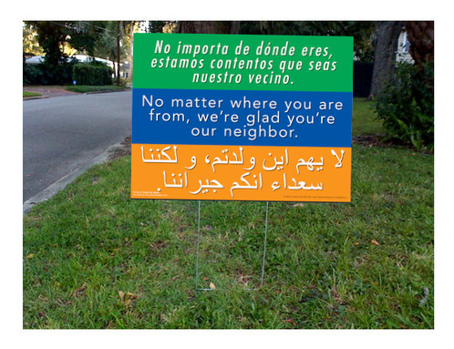

New Additions to the Melting Pot:
State Refugee Totals
2008-2016

This interactive proportional symbol map shows the total number of refugees each state receives by year. This map was developed in response to the impending travel ban in the United States, which directly bans travel from Syria, Iran, Yemen, Sudan, Libya, and Somalia. Use this map to explore the current refugee controversy and better understand the diversity and value that refugees add to our country. The specific countries that are subject to potential bans are some of the countries in the world with the greatest number of people seeking refuge. By implementing a wholesale block on these countries, we may be simply ignoring folks that need help the most.
Interpreting the Map
The states' symbols are proportionally sized based on the total number of refugees they take in each year. Consult the legend as a guide to this symbology. You can mouse over each state to display an information window showing the number of refugees for a given state of interest, including the number of refugees from the six travel ban countries. Use the year slider in the bottom left corner of the map to cycle through the years in the dataset.